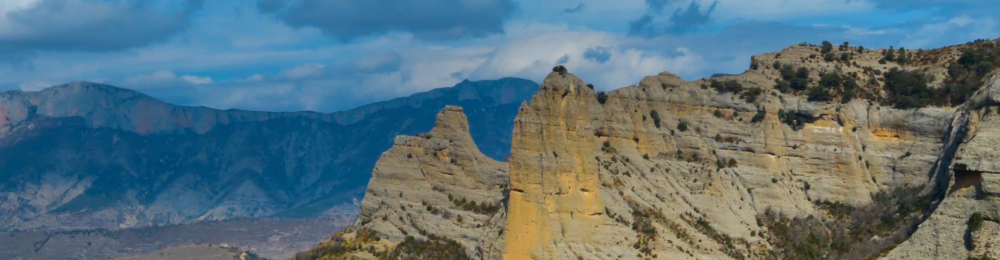

Ruta · Tremp
Sortint d'Espluga de Serra us proposem enfilar-nos al seu darrere, damunt la serra de Castellet, i fer tota la seva carena fins al coll de Caramell , per on baixarem a Castellet. Gaudireu d'unes…